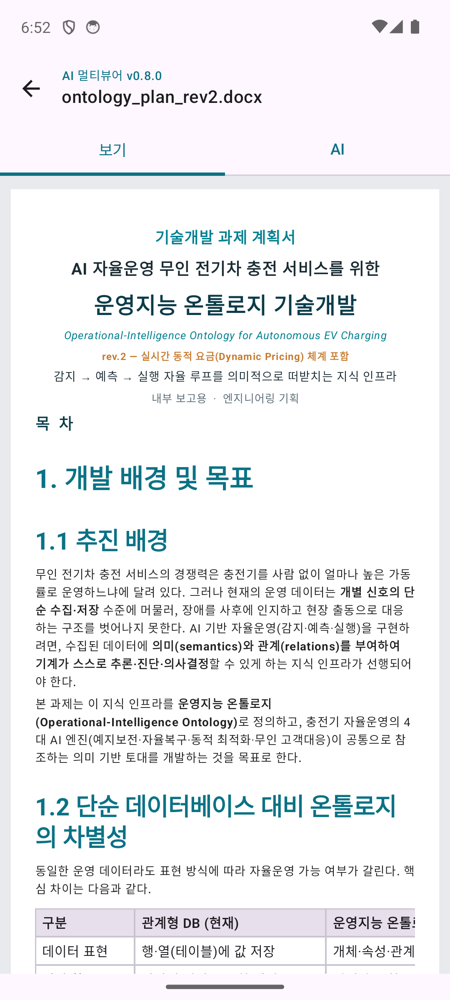
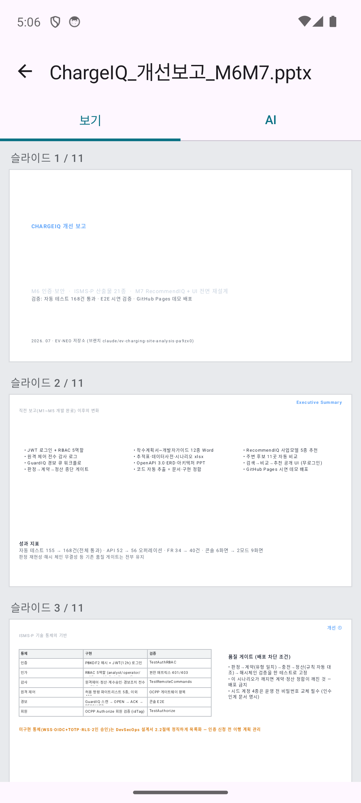
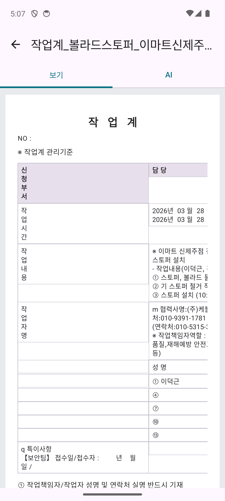
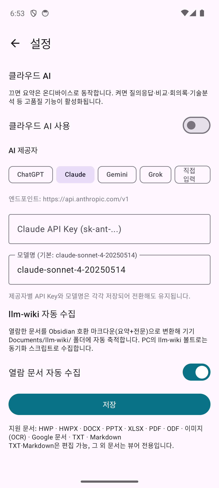

HWP·Word·PPT·Excel·PDF·이미지(OCR)까지 하나의 앱에서. 외부 서버 없이 기기에서 직접 판독하고, AI 요약과 Q&A, Obsidian 지식 수집까지 이어지는 안드로이드 문서 뷰어입니다.

문서 판독부터 AI 분석, 지식 축적까지 — 열람 이후의 흐름을 하나로 연결합니다.
HWP 5.0 바이너리·OOXML을 자체 파서로 해석해 글자 서식, 문단 정렬, 표, 삽입 이미지를 종이 페이지 스타일로 재현합니다.
파워포인트 슬라이드를 원본 위치·크기·서식 그대로 시각 재현합니다. 발표자 노트까지 함께 확인할 수 있습니다.
렌더링된 화면을 이미지처럼 픽셀 그대로 확대·이동합니다. 확대 중에도 글자가 깨지거나 재배치되지 않습니다.
사진·스캔 문서를 온디바이스 ML Kit OCR(한국어+영문)로 텍스트화합니다. 네트워크 없이 동작합니다.
TXT·Markdown은 뷰어에서 바로 수정하고 원본 파일에 저장합니다. 오피스 문서는 안전한 뷰어 전용입니다.
온디바이스 요약은 키 없이 즉시. 클라우드 연결 시 질의응답, 문서 비교, 회의록 생성, 기술문서 분석까지 확장됩니다.
열람한 문서를 요약+전문 마크다운으로 변환해 llm-wiki 볼트에 자동 축적합니다. 보는 것이 곧 지식이 됩니다.
문서 판독은 전부 기기 안에서 수행됩니다. 클라우드 AI는 선택 사항이며 언제든 끌 수 있습니다.
GitHub Actions로 서명된 APK가 자동 릴리스됩니다. 코드와 개발 문서가 모두 공개되어 있습니다.
실제 기기에서 캡처한 화면입니다.



모두 자체 구현 파서 — 무거운 외부 라이브러리나 변환 서버가 없습니다.
| 포맷 | 렌더링 | 비고 |
|---|---|---|
| HWP / HWPX | 페이지 뷰 | HWP 5.0 바이너리 자체 파서 — 글자 서식·정렬·표·삽입 이미지 |
| DOCX | 페이지 뷰 | 글자 크기/굵기/색, 문단 정렬, 표 그리드, 삽입 이미지 |
| PPTX | 슬라이드 캔버스 | 원본 레이아웃 시각 재현 + 발표자 노트 |
| XLSX | 표 그리드 | 시트별 열 정렬·가로 스크롤 |
| 페이지 렌더 | 고해상도 페이지 + 텍스트 추출 | |
| 이미지 | 줌 뷰어 | 핀치 줌·팬 + 온디바이스 OCR(한국어·영문) |
| Google 문서 | PDF 렌더 | Drive 가상 파일을 PDF로 내보내 판독 |
| TXT / Markdown | 편집 가능 | 뷰어에서 바로 수정·저장 |
제공자를 선택하면 엔드포인트와 기본 모델이 자동 설정됩니다. API 키는 제공자별로 안전하게 따로 저장됩니다.
GitHub Releases에서 서명된 APK를 내려받아 설치하면 끝. 회원가입도, 서버도 필요 없습니다.
⬇ 최신 APK 다운로드